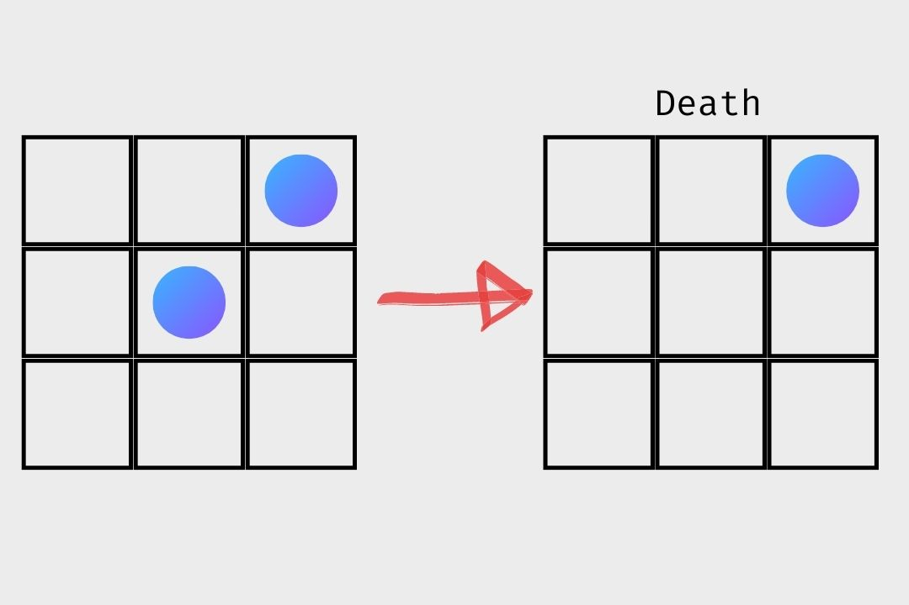
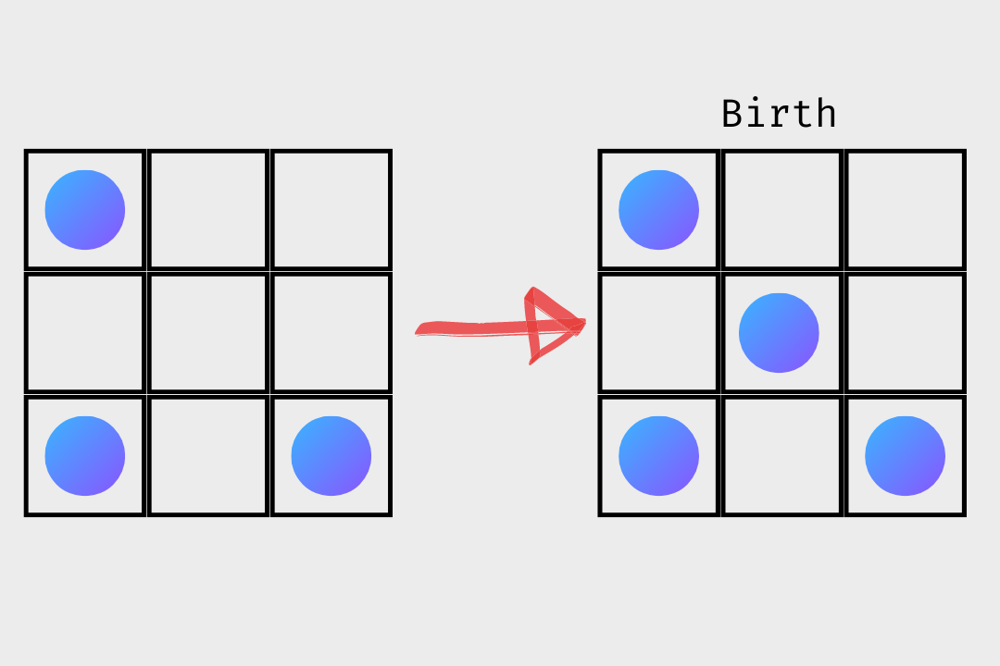

Mathematicians Favourite Pixel Art: Conway’s Game of Life
The Game Of Life I created. It was the October of 1970 and the monthly magazine “Scientific American” had a peculiarly interesting article on an apparent game called “life”. That issue of the magazine grew up to be the most sold at the time. The game was The Game of Life by John Horton Conway, an English mathematician. Dr. Conway calls the game a “zero-player” game which accurately describes the amusement you can achieve by just observing the patterns transform from afar. The game was simple, it had 3 easy rules which may seem incredibly easy to build. Who wouldn’t be able to come up with three rules? However, it took Conway a considerate amount of time to carefully craft these three rules that would now be called the most popular Cellular Automaton ever created. The scarcity of rules in the game of life leaves it with surprisingly few constraints; a game with a million rules, obviously, leaves a lot of constraints on what the game can achieve. You might question the game’s notability considering the simplistic behaviour of the rules but numerous researches still go on till this day on the game with incredible formality.

The Rules
The three very simple rules of the game allows the game to be even played on a chess or a Reversi board. A particular “cell” can have 2 states: alive or dead. To determine a cell’s state in the next generation, its neighbours(N) are addressed. Every cell (except the corner cells) have 8 neighbours.
Looking at one cell, you look at the following three rules and change the state of the cell.
- Survival: Every cell with 2 or 3 alive neighbours, stays alive.

- Death: Every cell with 4 or more neighbours dies as if by overpopulation, and every cell with 1 or less neighbour dies as if by underpopulation.

- Birth: Cells with exactly 3 neighbours are born.

Those three very simple rules are the pillars of the game of life and are the reason why it’s still loved by computer scientists and mathematicians.
…that’s it?
Actually this was the start of a revolution in mathematics. People didn’t really pay much attention to this extremely predictable and insignificant “game”. You could try making very simple simulations using the above rules on a chess board, it’s really not that interesting. HOWEVER, it was after the discovery of the very celebrated “GLIDER”. The glider was the first interesting pattern that emerged, it started at one point and just kept moving (one thing to note here is that the cells were actually not moving, it was the pattern made by the death and birth of cells that made this amazing pattern possible). It’s a pattern that looks like this:

This. Was. It. It made mathematicians and geeks go crazy. A pattern that moved in a game this simple? There must be more. Hence began the still going hunt for new patterns and we’ve really come far. The glider gave rise to a lot of serious research in this fresh zero-player game everybody called “life”. There was actually a bimonthly magazine JUST showing the new patterns emerging every day. Towards the end of 1970, Conway offered a $50 reward for anyone who came up with a pattern that grew indefinitely. Bill Gosper formed a team at Massachusetts Institute of Technology to work on this and they didn’t disappoint. In November 1970, the $50 were Gosper’s. He created what now is called a Gosper Glider Gun. Well, something with a name that cool has to be exceptionally fascinating and gosper’s gun WAS fascinating. It emitted everyone’s favourite little spaceships, the glider. It blew Conway’s mind along with the many others who started, instantly, working on even more complex patterns. Ladies and gentlemen, The Gosper Glider Gun:

The Gosper Glider Gun emitted a new glider every 30 generations. This opened up numerous new possibilities for the glider and infinite new possibilities for the game of life.
Classification of patterns

The discoveries of all these new patterns meant a system to classify these patterns needed to be formed. That system was established just a few months after the game’s inception in October 1970.
This system started off with 3 main classes but then added 3 more to cover ALL possible patterns. Every time you go down a class, the patterns become more mysterious.
- Class I: Still lives. These are patterns that just don’t change and are the same throughout.
- Class II: Oscillators. These patterns repeat. That’s it, they repeat or oscillate.
- Class III: Spaceships. Here lies our glider. The glider is the smallest spaceship ever created by humanity. There are other spaceships as well. These are patterns which “look” like they are moving in a direction.
- Class IV: Glider Guns. We have glider guns to emit gliders. These are very important as they actually CREATE something inside the simulation.
- Class V: This class was just called “All objects not in above class”. This class contains ALL the objects which are known but are not in the above classes.
- Class VI: Finally, we have the mysterious class. These are all the objects not contained in above classes and are UNKNOWN. That might sound weird because if the patterns are “unknown” they must not even be there. However, as you observe the simulations more, you realize that some pattern seems to go on for infinite generations. A predictable pattern is one that can be predicted and thus, one which ends ultimately. A pattern that never ends can never be predictable and therefore, they remain unknown… spooky.
That’s not it as well.
As you may have noticed, the game of life seems pretty deep. There are so many patterns to still discover and so many patterns already discovered. All this is actually because The Game Of Life is Turing Complete. So when Alan Turing was building his Turing machine that would eventually give birth to computer science, he had no idea what he had created. The Turing machine was Turing Complete. Turing completeness is a concept in computer science that defines all computing machines. Every programming language you’ve ever worked on (yes, even scratch) is Turing complete. What does it mean to be Turing Complete? Well, a Turing complete system would be able to calculate most mathematical calculations along with most logical ones. The limit to which our computers can computer is so largely infinite that we haven’t discovered it yet. A Turing complete system can create, it can compute and it can terminate data. What I really mean is that if a system is Turing Complete, you can build a computer IN IT! You can build a computer IN the game of life? Oh yes! Another very familiar game that can achieve this is the one and only MINECRAFT. In April 2000, Paul Randell created the first computer in the game of life. This wasn’t the computer you use nowadays; it was the Turing Machine. The exact replica of the Turing machine INSIDE the game of life. It took 1140 generations to repeat a cycle. Then in 2016, Nicolas Loizou made the first EVER 8-bit computer INSIDE the game of life. This was an unbelievable feat. An 8-bit computer inside a game as simple as Life is probably one of the greatest achievements in mathematics humans ever achieved. An 8-but computer can be related to a modern computer. But wait… that isn’t all. You can actually. You can ACTUALLY create the Game Of Life INSIDE the Game Of Life. If that isn’t cool, I don’t know what is.
The legacy goes on.
John Conway passed away due to the COVID-19 infection on 11 April 2020. His absence is undoubtedly conspicuous. He was described as a lovely person to spend time with, his wit and humour pleased even the dead. His legacy still lives. His game still lives. In the words of Siobhan Roberts, his biographer, "John Conway is perhaps the most lovable egomaniac he is Archimedes Mick Jagger Salvador Dali and Richard Feynman all rolled into one he is one of the greatest living mathematicians with a sly sense of humour a polymath promiscuous curiosity and a compulsion to explain everything about the world to everyone in it " The game of life clearly changed a lot of the world we see today. It has been a subtle reason for advancements in Mathematics and Computer Science. As the growth of computers moves forward, more and more patterns are added to the list. All this and just 3 simple rules.